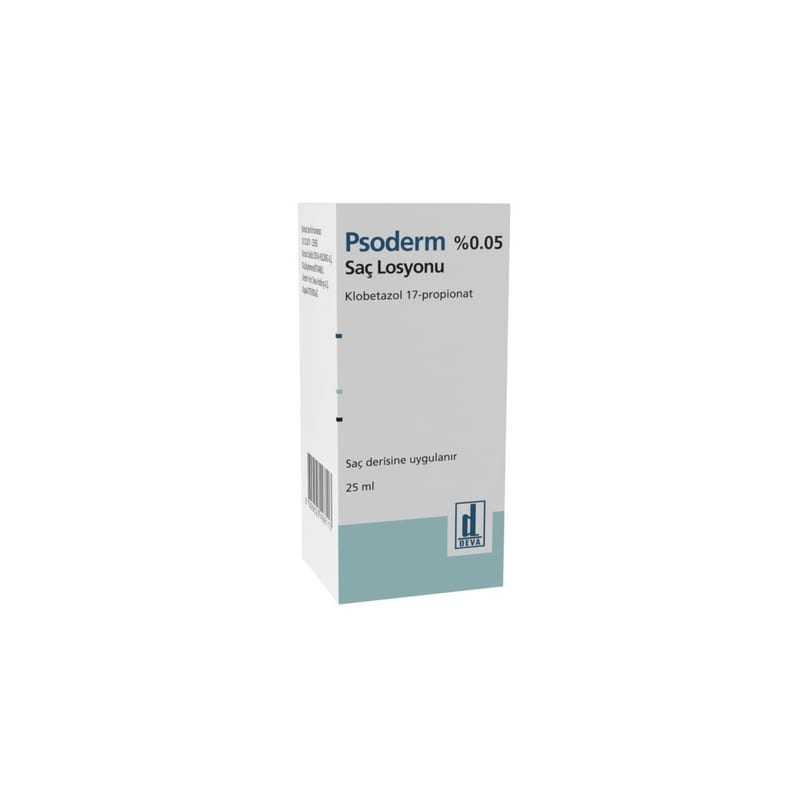

Psoderm % 0,05 Saç Losyonu, 25 ml

Ne için kullanılır
KT · Bölüm 1PSODERM, topikal steroidler denilen ve cilde sürülen bir ilaç grubunun üyesidir. Topikal steroidler belirli cilt problemlerindeki kaĢıntı ve kızarıklığı azaltırlar.
PSODERM 25 ml’lik ambalaj formunda bulunmaktadır.
PSODERM, sedef hastalığı (psöriasis) ve zor tedavi edilen dermatozlar (deri hastalıkları) gibi cilt problemlerinde iltihabın etkilerini azaltmak için kullanılır.